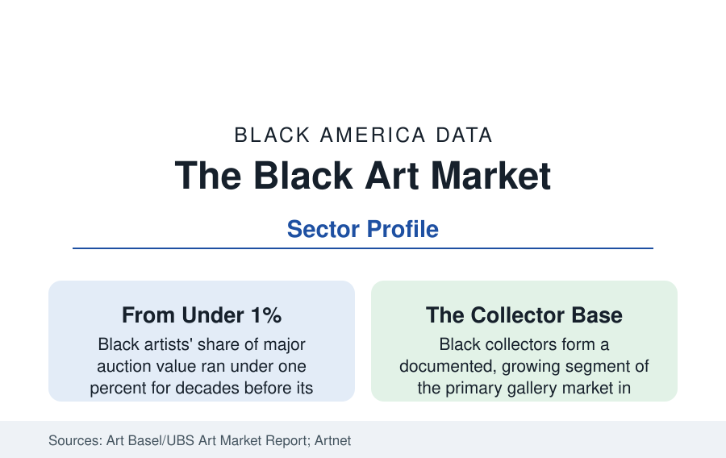

Black Business
The Black Art Market: Auction Records, Galleries, and the Collector Economy
Black artists' share of the auction market multiplied in the last decade, and a Black collector and gallery economy has built itself around the correction. The market data.

The art market spent most of a century mispricing Black artists — and the last decade repriced them in public, at auction, in numbers too large to argue with. Black artists' works went from under one percent of major auction value to a multiplied share, the living Black artists' primary market (galleries, waiting lists, museum shows) industrialized, and a Black collector class — whose existence the market had declined to notice — became its courted constituency. This article reports the art market data.
The Auction Correction in Numbers
The headline records mark the repricing's milestones: Jean-Michel Basquiat (not African American, but the market's Black-art price ceiling for decades, his 1982 skull canvas at $110.5 million in 2017 the era's benchmark), Kerry James Marshall's 'Past Times' at $21.1 million in 2018 (then the record for a living Black artist — bought by a Black collector, a datum the market noted), Mark Bradford's and Julie Mehretu's eight-figure results, and the broader indices behind them: the auction houses' own reporting of 'Black art' designated sales, the price databases' cohort indices showing contemporary Black artists' median prices multiplying several-fold across the 2015–2022 window while the overall contemporary index moved modestly. The correction's structure is in the segment data: it concentrated first in a few dozen names (the blue-chip cohort), spread to the mid-career and emerging tiers through the gallery system, and corrected partially in the 2023–24 contemporary-market contraction — the cycle data showing the Black contemporary segment falling with the market from a far higher plateau than its historical base.
The Gallery and Institutional Machinery
Beneath the auctions sits the machinery that makes a market: the gallery system (Black-owned galleries — from the historic Just Above Midtown's legacy to today's rosters in New York, Los Angeles, Chicago, Atlanta, and London — form a small but structurally important tier, their rosters feeding the museum and auction pipelines), the representation data (Black artists' share of the major galleries' rosters rising through the decade in the industry trackers, the mega-galleries' signing of Black artists' estates and careers the trade press's running story), and the museum layer (acquisition data from the museum directors' surveys and the burning-collection studies: Black artists' works forming a low-single-digit share of major museum collections, with acquisition spending shares rising faster from that base since the mid-2010s — the canonical correction proceeding at curatorial speed). The academic pipeline (the MFA programs and the Black art-history field's growth) and the publishing layer (catalogues, monographs) are the market's slow infrastructure.
The Collector Economy
The demand side has its own demographics: the market surveys document Black collectors as a distinct, growing segment — concentrated in the entertainment, finance, sports, and professional classes of the wealth profile, collecting with the canon-building intent the profile names (the prominent collections' museum loans and promised gifts in the institutional data), and served by an advisory layer (Black art advisors, the Black collector organizations and convenings of the fair circuit). The fair economy (Art Basel's and Frieze's Black-collector programming, the dedicated Black art fairs and the 1-54 contemporary African fair's editions) and the home-market layer (the print and edition economy, the poster-to-print ladder of the online platforms) monetize the segment at every price point. The geography concentrates where the wealth does — New York, Los Angeles, Atlanta, Chicago, Houston, Miami — the city profiles' cultural districts holding the galleries and the collectors' walls alike.
The Business Risks in the Data
The market file's cautions are standard to asset classes and sharp here: the speculation cycle in young artists' markets (the flip data — works resold within two years — concentrated in exactly the emerging tier the correction lifted, with price collapses in the weakest names during the contraction), the authentication and estate machinery for the historical masters (the catalogue raisonné projects for Black modernists proceeding decades late, against the forgery and attribution risks of a thin scholarly record), the insurance and tax apparatus of the collector class, and the representation plateau risk (the roster data of the most recent seasons showing the signing pace normalizing). The historical data supply the perspective the market keeps relearning: the Harlem Renaissance's artists were collected in their day, dropped for fifty years, and repriced by scholarship — the market's memory is short, the museums' is long, and the spread between them is this sector's permanent condition.
Reading the Art Market Data
The art market is the wealth economy's vanity mirror, and its Black data record a canon being corrected at auction speed: artists the museums would not buy at thousands bringing millions, a collector class buying its own image at last with the culture's full apparatus finally attentive. The numbers are froth and foundation at once — which is to say, a market — and the foundation part, the collections and endowments and scholarship, is the part that stays.
More in Black Business
Black-Owned Businesses: Counts, Receipts, and the Representation Gap
About 161,000 Black-owned employer firms and three million solo ventures: how the Census Bureau counts Black business ownership, where firms concentrate, and the gap between population share and business share.
Black Median Net Worth: The Wealth Gap in Federal Reserve Data
The Federal Reserve puts Black median family net worth at $44,900, against $285,000 for White families — about 16 cents on the dollar. The widest gap in economic data.
Black Buying Power: The $1.8 Trillion Consumer Economy
Black buying power is estimated at about $1.8 trillion — larger than the economy of most nations. What the figure measures, who produces it, and what it buys.
Source: Art Basel and UBS Art Market Reports; Artnet and Artprice auction data; Artsy and gallery industry research; Association of Art Museum Directors data.